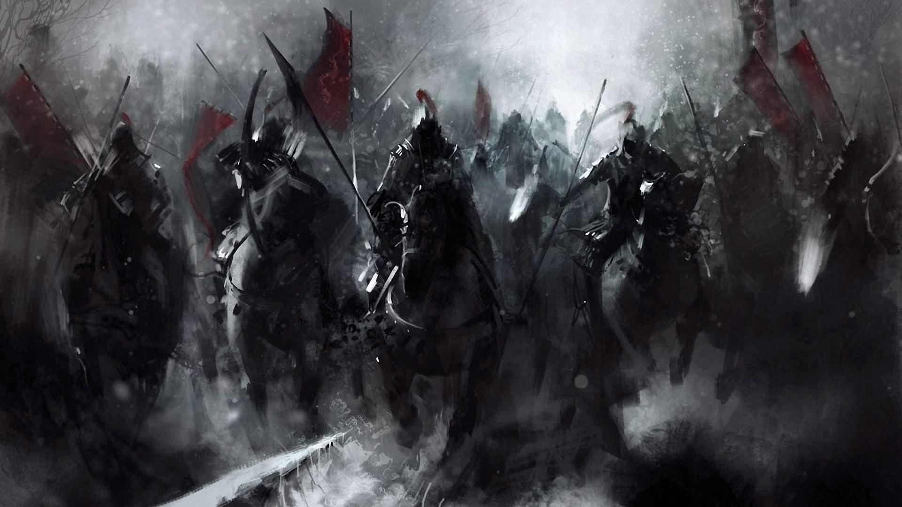

直轄軍一般局4部署
直轄軍全体の事務業務、施設管理、営内環境整備などを幅広く担当し、組織運営を円滑に進めます


直轄軍全体の事務業務、施設管理、営内環境整備などを幅広く担当し、組織運営を円滑に進めます
直轄軍の情報収集・分析・管理を担当し、戦略立案に必要な情報を提供します
直轄軍の統帥・指揮を担当し、戦場での行動を統括します。また宣伝部を擁し、戦場での報道や宣伝活動を担当します
直轄軍の中央管理業務を担当し、各部隊の連携や統制を図ります
直轄軍の経済業務を担当し、資源管理・財政支援・物資調達などを行います
直轄軍の法務業務を担当し、法規制の遵守・法的問題の解決などを行います。また軍内における規律維持のため軍紀を定め、違反者を罰し臣民の信頼を損ねないよう努めます
ゼクレス魔導国と連帯し活動する東部方面隊です
バルディスタ王国と連帯し活動する西部方面隊です
砂の都ファラザードと連帯し活動する南部方面隊です
大審門を守護し、ゲルヘナ幻野からグラデル大地を守る北部方面隊です
旧ネクロデアから魔幻都市ゴーラ跡まで、亡国の旧領/旧臣民を守護する遊撃隊です
作戦・輸送・補給・測量と築城等兵站を担当します
.jpg)
教育/訓練の担当です。魔獣や魔導等の専門以外、一般教育はこちらが担当します

編成や技術担当部門です
方面軍の統括/各国への駐在武官を管理担当します
過去の戦史や記録の調査分析、そして現在の戦況等を記録保存します

直轄軍入隊した将兵の教育・訓練を担当します
以下の項目においては軍とは軍隊における単位の方を指します。
軍は軍団が2～4個、師団であれば4個師団以上をもって"軍"を構成します。
以下項目にて軍が内部に有する各種単位をご紹介します

2～4個の師団をもって1個軍団とします

2～4個の旅団、又は4個以上の連隊をもって1師団とします

2～4個の連隊、又は4個以上の大隊をもって1旅団とします

2～4個の大隊、又は4個以上の中隊をもって1連隊とします

2～4個の中隊をもって1大隊とします
3～4個の小隊をもって1中隊とします
2～3個の分隊をもって1小隊とします
分隊以下には数の定めがありません。分隊の下に班、班の下に組が存在し、組が最小単位になります
大型魔獣を使役する兵科はこちらに分けられます。通常の魔族/魔物以上に、軍の運用を行うにあたり訓練期間を要し、導き手との絆が深まりやすいため一般の部隊とは別個して数えられるためです。

大型魔獣使役者達と、連携訓練を積んだ他兵科による７個連隊にて１軍団を為します

一般の魔獣以上に熟練した運用を求められる飛翔方魔物にて構成されています

特殊訓練を積んだ小型魔物達を用いて、特殊な工兵作業を担います

陸路/海路/空路と各々の範囲で高速に動ける魔物、そして力自慢達で構成された兵站部隊です

攻撃魔法主体による砲兵として各軍に出向します

強化魔法/変性魔法によってい工兵活動、味方の強化等支援活動にあたります
各部隊へ出向、精神魔法等を駆使の上敵軍かく乱など乱波活動を行います